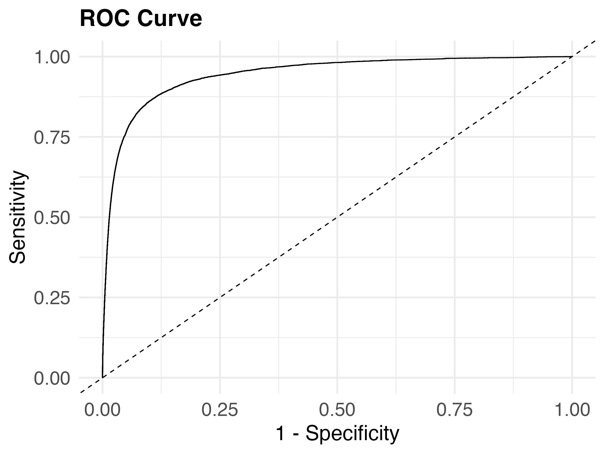

University of Wisconsin-Madison
2024-12-13
A part of a larger project under the Addiction Research Center.
Overarching Goals:
Our project is to build and to evaluate machine learning models to predict AUD and OUD lapses
XGBoost algorithm

How might we use these models to deploy the right recommendation, to the right person, at the right time?
Recent NIH-funded Grant:
Shapley Values